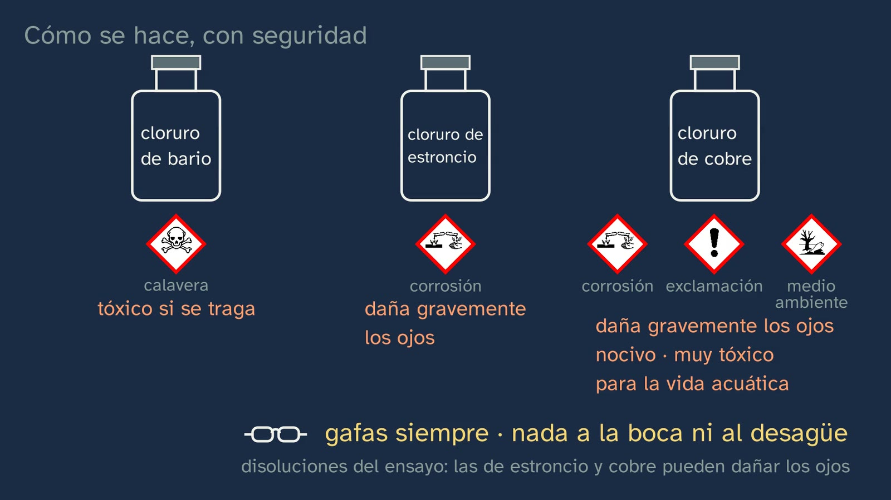
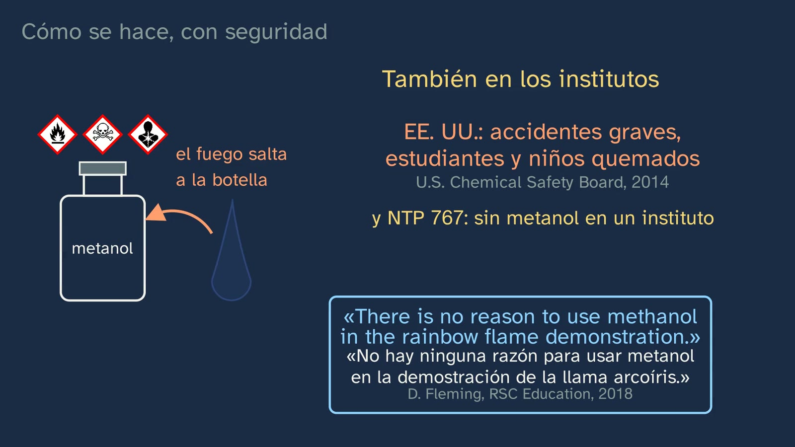
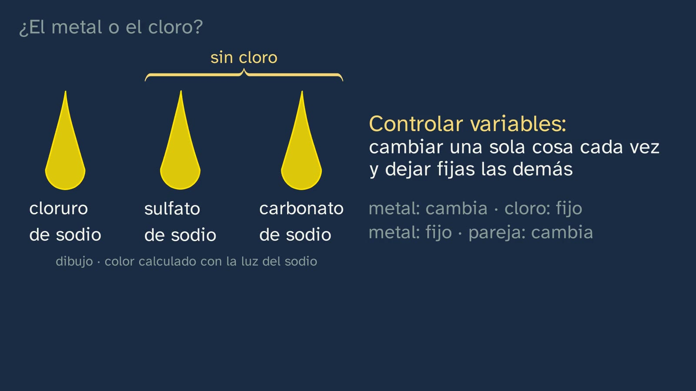
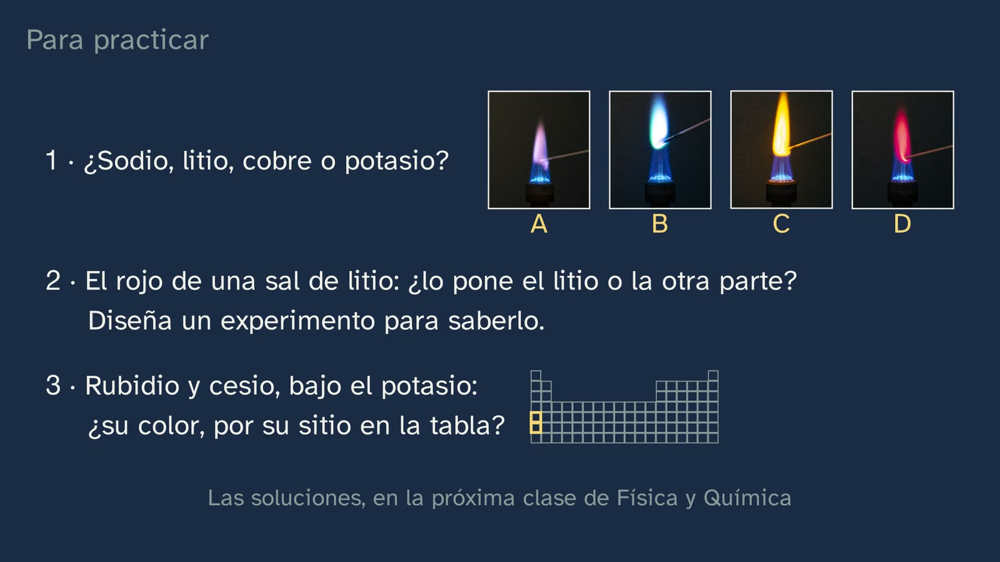

El color de las llamas
En pocas palabras
Es la primera clase de laboratorio del tema, y va a propósito antes de la teoría: hoy se mira el fenómeno con atención y la explicación llega en la clase 3. Arranca con dos cosas que el alumnado ha visto (el agua con sal que se sale de la olla vuelve amarilla la llama del gas; en los fuegos artificiales, el estroncio suele poner el rojo y el bario el verde) y con la apuesta que dejó abierta la clase 1: el litio, el sodio y el potasio son de la misma familia, ¿darán el mismo color? Las fotos de ensayos reales dicen que no: rojo intenso, amarillo anaranjado y lila pálido. Ese enigma, misma familia y colores distintos, se queda abierto para la clase 3. Después, cómo se hace el ensayo en un instituto, y con seguridad: la llama azul del mechero y por qué no la amarilla, el método de las astillas de madera de la Royal Society of Chemistry en lugar del hilo que suele limpiarse con ácido clorhídrico concentrado, los pictogramas de las sales leídos uno a uno, por qué no se hace en casa y un aviso que vale también para el profesorado: la «llama arcoíris» con metanol, nunca. El centro de la clase es una pregunta de científico: todas las sales llevan cloro, ¿y si el color fuera del cloro? Se responde controlando variables en los dos sentidos (el cloro en todas y el metal cambiando; el mismo metal y la pareja cambiando), con un matiz, el cobre, cuyo tono cambia con la pareja, y una excepción de verdad, el boro, que no es un metal y colorea. Se desmonta el error «el color es cosa del fuego» y se acaba en el límite del ojo: el rojo del litio y el del estroncio se confunden con una sola llama delante, y el amarillo del sodio lo tapa casi todo. Abril se despide con la frase que hay que recordar: para saber qué causa qué, cambia una sola cosa cada vez.
Objetivo. Al terminar, el alumnado sabrá identificar algunos metales por el color que dan a una llama, explicar cómo se hace el ensayo con seguridad y cómo se comprueba que el color lo pone el metal, y por qué a veces el color no basta.
Lo que esta ficha añade. El protocolo del ensayo para el laboratorio del instituto (el de las astillas de la RSC, con sus concentraciones, adaptado a lo que recomienda en España la NTP 767 y con la gestión de residuos); un aviso sobre el metanol para el profesorado, con sus fuentes; una nota honesta sobre quién emite de verdad el color en la llama, que la clase resume, con razón, en «lo pone el metal»; las soluciones de los ejercicios y de la misión; y una actividad de laboratorio, «La sal desconocida», con su hoja.
Currículo
Real Decreto 243/2022, Física y Química (texto consolidado del BOE, comprobado el 02/10/2026). Los minutos son los del vídeo.
| Elemento | Qué dice el decreto | Dónde se trabaja |
|---|---|---|
| Saber básico (bloque A, «Enlace químico y estructura de la materia») | «Estructura electrónica de los átomos tras el análisis de su interacción con la radiación electromagnética: explicación de la posición de un elemento en la tabla periódica y de la similitud en las propiedades de los elementos químicos de cada grupo.» | Sólo se empieza, y conviene decirlo: la clase observa la luz que da cada elemento en una llama (3:57 y 4:21) y deja la estructura electrónica para la clase 3. La segunda mitad del saber aparece como problema: el litio, el sodio y el potasio se parecen y están en el mismo grupo, pero su llama es distinta (3:35 a 4:21). Ese enigma lo recoge la clase 3 |
| Competencia específica 1 | «Resolver problemas y situaciones relacionados con la física y la química, aplicando las leyes y teorías científicas adecuadas, para comprender y explicar los fenómenos naturales y evidenciar el papel de estas ciencias en la mejora del bienestar común y en la realidad cotidiana.» | La llama del gas que amarillea y los fuegos artificiales (2:36 y 2:40), y la misión de los fuegos (13:01). Su descripción habla de «utilizar herramientas científicas para la toma y registro de datos»: es la tabla de observación de la actividad de esta ficha |
| Competencia específica 2 | «Razonar con solvencia, usando el pensamiento científico y las destrezas relacionadas con el trabajo de la ciencia, para aplicarlos a la observación de la naturaleza y el entorno, a la formulación de preguntas e hipótesis y a la validación de las mismas a través de la experimentación, la indagación y la búsqueda de evidencias.» | La apuesta (3:35) y la pregunta del metal o el cloro (8:07 a 9:39). Su descripción pide «utilizar en Bachillerato la metodología científica con mayor rigor»: aquí, controlar variables |
| Competencia específica 3 | «Manejar con propiedad y solvencia el flujo de información en los diferentes registros de comunicación de la ciencia como la nomenclatura de compuestos químicos, el uso del lenguaje matemático, el uso correcto de las unidades de medida, la seguridad en el trabajo experimental, para la producción e interpretación de información en diferentes formatos y a partir de fuentes diversas.» | La seguridad en el trabajo experimental (4:51 a 8:07): el mechero, el método, los pictogramas leídos uno a uno. Su descripción nombra «la normativa de seguridad de los laboratorios científicos» |
| Criterio 1.1 | «Aplicar las leyes y teorías científicas en el análisis de fenómenos fisicoquímicos cotidianos, comprendiendo las causas que los producen y explicándolas utilizando diversidad de soportes y medios de comunicación.» | En parte, y hay que decirlo: la clase identifica la causa del color, el metal (8:33 a 9:39), en dos fenómenos cotidianos (2:40), pero la teoría que lo explica llega en la clase 3 |
| Criterio 2.1 | «Formular y verificar hipótesis como respuestas a diferentes problemas y observaciones, manejando con soltura el trabajo experimental, la indagación, la búsqueda de evidencias y el razonamiento lógico-matemático.» | La apuesta del mismo color, refutada con fotos (3:35 a 4:21); «¿y si el color lo pusiera el cloro?», con pausa (8:07) y su comprobación (8:33 a 9:39); el ejercicio 2, que pide diseñar la misma prueba para el litio (12:21) |
| Criterio 2.2 | «Utilizar diferentes métodos para encontrar la respuesta a una sola cuestión u observación, cotejando los resultados obtenidos y asegurándose así de su coherencia y fiabilidad.» | La misma conclusión por dos caminos: cambiar el metal con el cloro en todas (8:33) y cambiar la pareja con el mismo metal (8:48). Y en el caso del detective (10:18 a 11:58), tres métodos para una sola pregunta: comparar la llama con sales conocidas, una al lado de la otra; la astilla de control; el vidrio de cobalto. Y el instrumento de la clase 4 |
| Criterio 3.4 | «Poner en práctica los conocimientos adquiridos en la experimentación científica en laboratorio o campo, incluyendo el conocimiento de sus materiales y su normativa básica de uso, así como de las normas de seguridad propias de estos espacios, y comprendiendo la importancia en el progreso científico y emprendedor de que la experimentación sea segura, sin comprometer la integridad física propia ni colectiva.» | En el vídeo, se explica (4:51 a 8:07); se pone en práctica de verdad con el protocolo y la actividad de esta ficha |
Lo que hay que traer. De la clase 1: el litio, el sodio y el potasio forman una familia, y la pregunta con que terminó, «¿darán el mismo color?». De la ESO (Real Decreto 217/2022): las normas de uso del laboratorio y el trabajo con hipótesis, que el decreto pide de 1.º a 3.º con estas palabras: «identificación y formulación de cuestiones, elaboración de hipótesis y comprobación experimental de las mismas». Dos avisos. Leer un pictograma de peligro sólo es saber obligatorio en la ESO de Madrid (2.º y 3.º) y de Andalucía (3.º): la mayoría del alumnado no lo trae, y por eso la clase lee cada uno. Y una parte sí ha visto colores de llama en 3.º de ESO, porque lo traen algunos libros, a veces con hilo y ácido clorhídrico concentrado o con disoluciones alcohólicas pulverizadas sobre el mechero; lo que añade esta clase es el porqué de cada decisión: el método, la seguridad, el control de variables y el límite del ojo.
Cómo está construida la clase
Capítulos del vídeo
Unos catorce minutos, en diez capítulos. Sigue las bases formativas del canal y el formato de las clases de laboratorio: primero el fenómeno y después la teoría; lo que se ve es real (fotos y un vídeo con licencia libre, con su autor en pantalla); la seguridad, justo cuando hace falta; y lo que dibuja la pizarra se rotula como dibujo, sin pintar nunca encima de una foto real. Abril sale a cámara cuatro veces: al saludar (0:00), con el gancho (2:36), a mitad (9:39) y al despedirse (13:54).
| Capítulo | Qué pasa | Por qué así |
|---|---|---|
| Qué vamos a ver (0:00) | Abril saluda. En la pizarra, el mapa del tema: la segunda de seis clases y la primera de laboratorio. Hoy se mira; la explicación, en la clase siguiente. | Saber dónde se está ordena lo que se aprende, y avisar de que hoy no se explica evita esperar una respuesta que no llega. |
| Una pregunta de la clase anterior (0:25) | ¿En qué se parecían el litio, el sodio y el potasio? Pausa (0:32). Son blandos, reaccionan con el agua y desprenden hidrógeno: la familia de los metales alcalinos. | Recuperar lo de la clase 1 justo antes de ponerlo a prueba. |
| Las soluciones de la clase anterior (0:54) | La tríada del calcio, el estroncio y el bario (88,7 frente a 87,62); el bromo (81,2 frente a 79,90); el cobalto delante del níquel, por número atómico, y por qué pesa más: lleva más neutrones, y un neutrón pesa casi lo mismo que un protón (59 partículas en el núcleo frente a 58). | Práctica espaciada, con el porqué y no sólo el resultado. |
| Llamas de colores (2:36) | El gancho, a cámara. La cocina dibujada, con el color calculado con la luz del sodio, y la foto real; los fuegos artificiales. «¿Por qué estos metales pintan la llama, cada uno de su color?», y la respuesta, aplazada. | Dos cosas vistas en la vida, con la misma pregunta debajo. |
| ¿El mismo color? (3:15) | Por qué se usan sales y no el metal puro. La apuesta de la clase 1, con pausa (3:52). Las fotos reales del litio, el sodio y el potasio; el enigma, para la clase 3; otros cuatro metales (calcio, estroncio, bario y cobre) y uno que no colorea, el magnesio. | Predecir antes de ver: el error («misma familia, mismo color») sale de lo que se acaba de recordar. |
| Cómo se hace, con seguridad (4:51) | Bata, gafas y pelo recogido. El mechero: con la entrada de aire cerrada, llama amarilla de hollín; abierta, el gas se quema del todo y la llama es azul. Las astillas de la RSC: remojadas en agua destilada, una para cada sal. El hilo, el método tradicional, con su ácido corrosivo, en un vídeo real. Los pictogramas, leídos uno a uno: la calavera del cloruro de bario (y la guía española que pide no tenerlo en un instituto), la corrosión del estroncio y el cobre, la exclamación y el medio ambiente del cobre. Por qué no se hace en casa. La «llama arcoíris» con metanol: los accidentes de Estados Unidos, el fuego que salta a la botella, la frase de Fleming y la NTP 767. | La seguridad justo cuando hace falta (criterio 3.4), cada norma con su porqué. |
| ¿El metal o el cloro? (8:07) | ¿Y si el color lo pusiera el cloro? Pausa (8:28). Siete cloruros, siete colores; el sodio con sulfato y con carbonato, el mismo amarillo (en dibujo); controlar variables; el matiz del cobre y la excepción del boro. Abril, a cámara (9:39): en estas sales, el color lo pone el metal. | El corazón de la clase: el alumnado diseña la prueba antes de oírla, y el matiz y la excepción se cuentan como tales. |
| El error: «es cosa del fuego» (9:43) | La misma llama, y un color para cada sal. Es verdad que con la entrada de aire cerrada la llama es amarilla: por eso se usa la azul. | El error típico, desmontado con lo que ya se ha visto. |
| Cuando el color no basta (10:18) | Una llama roja intensa: litio o estroncio, ¿cómo lo averiguarías? Pausa (10:37). Con una sola llama delante es fácil equivocarse; lo más que puede hacer el ojo es compararla con sales conocidas, una al lado de la otra. El sodio está en casi todo y tapa el lila del potasio; la astilla de control con agua destilada; el vidrio de cobalto, dibujado aparte. El ojo tiene un límite, y el instrumento, con un DVD, llega en la clase 4. | El límite del método, dicho con honestidad, con lo que sí puede hacer el ojo, y el puente a la clase 4. |
| Para practicar y seguir pensando (11:58) | Recapitulación; tres ejercicios, con pausa (12:58); la misión de los fuegos artificiales; la pregunta abierta; la clase 3 y la despedida. | Las soluciones abren la clase 3. La pregunta abierta va también en los comentarios. |
Puentes con otras materias. Filosofía: la pregunta abierta (¿cómo se sabe qué causa qué cuando no se puede experimentar?) es la del método de las ciencias que no pueden manipular su objeto. Biología: la astilla con agua destilada es el «control» de cualquier experimento. Economía: el premio de Economía en memoria de Alfred Nobel de 2021 premió, entre otras cosas, enseñar qué conclusiones de causa y efecto se pueden sacar de los «experimentos naturales» (véase «Preguntas y soluciones»).

Plan de una sesión de 50 minutos
Pensado para el laboratorio, con la actividad «La sal desconocida» (véase más abajo) y la hoja del alumnado. El vídeo se ve a trozos, unos diez minutos en total.
| Minutos | Qué se hace |
|---|---|
| 0–4 | Sin vídeo, con la hoja: «Antes de ver el vídeo». ¿Darán el mismo color el litio, el sodio y el potasio? ¿Qué pone el color: el metal, el cloro o el fuego? Cada cual apunta su apuesta. |
| 4–8 | Vídeo de 0:00 a 0:54 y de 2:36 a 4:51; las soluciones de la clase 1 (0:54 a 2:36), sólo si no se corrigieron ya en el aula. Parar en la apuesta (3:52) y comparar con lo apuntado. |
| 8–12 | Vídeo de 4:51 a 8:02: la seguridad. |
| 12–14 | Las normas de hoy, en el puesto: gafas puestas, pelo recogido, llama azul, una astilla nueva para cada disolución, el vaso con agua para las usadas. Reparto de puestos. |
| 14–36 | La actividad: el control, las conocidas, el sodio con otras parejas y la desconocida, con la tabla de la hoja. |
| 36–40 | Recogida: astillas, disoluciones y residuos, según el protocolo; lavarse las manos. |
| 40–46 | Vídeo de 8:07 a 11:58. En la pausa de 8:28 ya tienen la respuesta en su tabla; en la de 10:37, quien tuvo una desconocida roja sabe por qué cuesta. |
| 46–50 | Puesta en común: ¿qué dejasteis fijo y qué no pudisteis dejar fijo? El último capítulo (11:58 al final), en casa, con la hoja. |
Si no hay laboratorio, o no se puede hacer el ensayo: el vídeo entero en clase, parando en las cinco pausas, y la actividad sobre el papel (al final del apartado de la actividad).
El ensayo en el laboratorio del instituto
El método de la RSC, resumido
La Royal Society of Chemistry propone un método pensado para que el ensayo lo haga el propio alumnado, en una media hora, sin hilo de nicrom o platino: el hilo se contamina, hay que renovarlo y, sobre todo, se suele limpiar con ácido clorhídrico concentrado, que es corrosivo e irrita las vías respiratorias. En su lugar, astillas de madera.
La idea, en nuestras palabras: con tiempo, antes de la clase (la RSC no fija cuánto), se dejan las astillas en remojo en agua destilada. Cada puesto tiene un tubo ancho, medio lleno con la disolución de una sal, rotulado con el nombre y el símbolo del metal y con sus avisos de peligro, y dentro de él tantas astillas ya remojadas como grupos haya. El alumno acerca la punta empapada a la llama azul del mechero y anota el color, sin dejar que la astilla llegue a arder con fuerza. En cada puesto hay un vaso con agua para tirar las astillas usadas. Si se quiere, el mechero puede sujetarse inclinado con una pinza, para que lo que gotea no caiga en su boca, cuidando hacia dónde apunta la llama. Y la RSC sugiere dos puestos más: uno con agua destilada, como control, y otro con una disolución «desconocida». Fuente: RSC Education, «Flame tests (the wooden splint method)» (publicado en 2018 y revisado en 2026).
Por qué funciona como control de variables. Cada astilla toca una sola disolución y se tira: no hay arrastre de una sal a otra, que es el problema del hilo, y es lo que la clase resume en «una astilla para cada sal». La astilla con agua destilada dice qué color pone la madera sola: la madera lleva sodio (Universidad de Illinois, 2007), así que es probable que tiña algo de amarillo la llama (es una deducción nuestra, que conviene comprobar en el propio laboratorio). En las fotos de la clase se ve una varilla clara, de madera, que entra en la llama, como en este método; el único vídeo del método del hilo es el de la NCSSM, y la pizarra lo rotula así.
Material: gafas de seguridad para todos; mecheros Bunsen sobre placa aislante; gradillas y tubos de ensayo anchos (de ebullición); astillas de madera; agua destilada; un vaso con agua por puesto para las astillas usadas; bata; y los frascos de residuos del centro, rotulados (véase «Residuos»).
Las disoluciones
Las concentraciones de los cloruros son las de la RSC. Las masas, para 100 mL de disolución, son cálculo nuestro con las masas atómicas de la CIAAW; comprueba en el frasco si la sal es anhidra o hidratada, porque la masa cambia mucho. Los peligros son los de la sal sólida del frasco, con su palabra de advertencia y sus indicaciones H (fichas de seguridad de Thermo Fisher y clasificación de la ECHA, vista en PubChem); la penúltima columna dice qué conserva la disolución del ensayo.
| Disolución | Concentración | Para 100 mL | La sal del frasco | La disolución del ensayo (cálculo nuestro) | Color esperado |
|---|---|---|---|---|---|
| Agua destilada (control) | — | — | — | — | Casi ninguno; quizá algo de amarillo de la madera |
| Cloruro de litio | 0,5 mol/L | 2,12 g de LiCl | Atención: H302, H315, H319 | Bajo peligro | Rojo intenso |
| Cloruro de sodio | 0,5 mol/L | 2,92 g de NaCl | No clasificado | Bajo peligro | Amarillo anaranjado, muy intenso y persistente |
| Cloruro de potasio | 0,5 mol/L | 3,73 g de KCl | No clasificado | Bajo peligro | Lila pálido, débil (el sodio lo tapa con facilidad) |
| Cloruro de calcio | 0,5 mol/L | 5,55 g anhidro o 7,35 g del dihidratado | Atención: H319 | Bajo peligro | Rojo anaranjado (rojo ladrillo) |
| Cloruro de estroncio | 0,5 mol/L | 13,33 g del hexahidratado | Peligro: H318 (lesiones oculares graves) | Sigue siendo H318: gafas imprescindibles | Rojo intenso |
| Cloruro de cobre(II) | 0,5 mol/L | 8,52 g del dihidratado | Peligro: H302 + H312, H315, H318, H400, H411 | Sigue siendo H318, y no va al desagüe | Verde azulado |
| Cloruro de bario (véase «¿Y el bario?») | 0,1 mol/L | 2,44 g del dihidratado | Peligro: H301 (tóxico en caso de ingestión), H332, H319 | Bajo peligro a esta concentración; no va al desagüe | Verde pálido, flojo y breve |
| Sulfato de sodio (no es de la RSC: para cambiar la pareja) | 0,25 mol/L | 3,55 g anhidro | No clasificado | Bajo peligro | Amarillo, como el cloruro |
| Carbonato de sodio (ídem) | 0,25 mol/L | 2,65 g anhidro | Atención: H319 | Bajo peligro | Amarillo, como el cloruro |
| Sulfato de cobre(II) (opcional, ídem) | 0,5 mol/L | 12,48 g del pentahidratado | Atención: H302, H315, H319, H400, H410 | No va al desagüe | Verde, menos azulado que el del cloruro |
Tres notas sobre la tabla.
- Por qué el sulfato y el carbonato de sodio van a 0,25 mol/L. Cada unidad lleva dos sodios, y el cloruro, uno. A la misma concentración de sal, la llama recibiría el doble de sodio, y se estarían cambiando dos cosas a la vez. A 0,25 mol/L, las tres disoluciones llevan el mismo sodio (0,5 mol/L) y sólo cambia la pareja. Es una buena pregunta para el alumnado (está en la actividad). Con el cobre no hace falta: el cloruro y el sulfato llevan un cobre cada uno. Los nitratos, mejor no: la RSC los desaconseja porque en la llama dan óxidos de nitrógeno, que son tóxicos.
- Por qué la de estroncio y la de cobre siguen siendo peligrosas para los ojos. A 0,5 mol/L llevan unos 79 g de cloruro de estroncio y unos 67 g de cloruro de cobre por litro (contados como sales anhidras; más aún contados como hidratadas): más de un 5 % en masa. El Reglamento CLP clasifica una mezcla como «provoca lesiones oculares graves» si lleva un 3 % o más de un componente que lo sea (anexo I, tabla 3.3.3). Las demás bajan de sus límites: por ejemplo, la de bario, con un 2 % de sal, queda lejos del umbral de toxicidad aguda (anexo I, tabla 3.1.2). Es un cálculo nuestro, y coincide con la RSC, que considera de bajo peligro las disoluciones del ensayo menos la de estroncio, que puede dañar los ojos, y la de cobre, nociva y peligrosa para el medio ambiente. Conviene que el rótulo de cada puesto lo refleje.
- Los colores son los que dan la RSC, Chemguide y Vogel (1954), con sus matices: los nombres de los rojos bailan de una fuente a otra («carmine», «crimson», «red» y hasta «pink» se usan para el litio y para el estroncio), y Chemguide lo advierte. El del cobre con sulfato, en las fotos de S k y r y en Russell (2000).
Seguridad
- Gafas de seguridad todo el rato, también para quien sólo mira: la de estroncio y la de cobre pueden causar lesiones oculares graves. Bata y pelo recogido; nada suelto que cuelgue sobre la llama.
- El mechero, con la llama azul (la entrada de aire abierta), sobre una placa aislante y lejos del borde de la mesa. La amarilla, con el aire cerrado, se usa sólo como llama de seguridad mientras no se trabaja.
- Una astilla nueva para cada disolución, y nunca de vuelta a otro tubo: así no se contaminan. La astilla no debe llegar a arder con fuerza; si prende, al vaso de agua.
- Nada a la boca, nada al desagüe, y las manos lavadas al terminar.
- Nada de disolventes inflamables: ni metanol ni etanol, ni pulverizadores con alcohol (véase «El metanol: un aviso para el profesorado»).
- Los rótulos: nombre, símbolo del metal y avisos de peligro en cada puesto, como pide la RSC. Para la muestra desconocida, el aviso más exigente de los posibles (por ejemplo, el del estroncio), para que la etiqueta no la delate y nadie la trate con menos cuidado del debido.
- El ácido clorhídrico concentrado no hace falta: es la razón de ser del método. Si el departamento prefiere el hilo, Chemguide señala que puede limpiarse con ácido diluido, aunque los colores salen menos intensos.
¿Y el bario?
La RSC usa el cloruro de bario, y lo diluye más que los demás (0,1 mol/L). En España, la Nota Técnica de Prevención 767 del INSHT (2007), sobre los residuos peligrosos en los centros de secundaria, incluye el cloruro de bario (y el metanol) en su «Lista no exhaustiva de productos peligrosos que no deben hallarse en un centro docente de secundaria» (tabla 1, en la columna de los tóxicos), y explica que los productos muy tóxicos, tóxicos, sensibilizantes o CMR no se deben utilizar en un centro de secundaria y, si los hay, deben eliminarse. Las NTP, dice el propio documento, «son guías de buenas prácticas. Sus indicaciones no son obligatorias salvo que estén recogidas en una disposición normativa vigente».
Nuestra recomendación, y la de la clase: hacer el ensayo sin bario. La clase lo dice al leer su pictograma: su verde, mejor verlo en foto. No se pierde nada esencial: el verde del bario está en la foto real del vídeo, el control de variables sale igual con los otros seis cloruros, y si se quiere un verde, el sulfato de cobre lo da, y además enseña el matiz del cobre.
Si un departamento decide, con su propia evaluación de riesgos, mantener el bario, lo prudente es no guardar el sólido: comprar sólo la disolución diluida si su proveedor la ofrece, preparar poco volumen y recoger todo como residuo. A 0,1 mol/L la disolución queda por debajo de los límites de toxicidad aguda del CLP (cálculo nuestro, arriba), pero la NTP habla del producto, y el sólido del frasco es tóxico en caso de ingestión.
Si alguien pregunta por qué el bario no sirve para el ejercicio 2 (que el vídeo plantea con el litio): comprobar con el bario si el color es del metal o de la pareja es difícil de verdad. Casi todas las sales de bario distintas del cloruro son poco volátiles (Vogel, 1954; por eso el método clásico moja el hilo en ácido clorhídrico, para convertirlas en cloruro) o insolubles, como el sulfato y el carbonato; el nitrato es soluble, pero los nitratos, mejor evitarlos (RSC); y todas son tóxicas. Y la respuesta tiene un matiz que el litio no tiene: el verde es del bario, porque sin bario no hay verde, pero quien lo emite es una molécula que se forma en la llama, BaOH, y cuando hay cloro, sobre todo BaCl (Russell, 2000). Con el litio, en cambio, la respuesta es limpia.
Residuos
La NTP 767 trata los restos de las prácticas como residuos peligrosos que se gestionan dentro del centro hasta que los recoge un gestor autorizado: se clasifican por grupos según su naturaleza y su compatibilidad, se etiquetan y se almacenan aparte. Y pide pensar antes en reducir y reutilizar, por ejemplo como punto de partida de otra práctica. Para este ensayo:
- Reducir y reutilizar. Basta con 100 mL de cada disolución. Los tubos, tapados y rotulados, sirven para la clase siguiente y para el curso que viene: lo que no se tira no es residuo.
- El cobre (y el bario, si se usa), nunca al fregadero. El cloruro y el sulfato de cobre son muy tóxicos para los organismos acuáticos (H400). Lo que sobre de esas disoluciones va al frasco de disoluciones acuosas inorgánicas del centro (el grupo III de la NTP 767), rotulado con lo que contiene.
- Las astillas usadas salen del vaso, se dejan secar y van como material contaminado (el grupo VI de la NTP); el agua de los vasos de los puestos de cobre (y de bario), al mismo frasco que sus disoluciones.
- Las demás disoluciones son de bajo peligro. Aun así, lo más sencillo y lo más coherente con la NTP es reutilizarlas o recogerlas con las otras, según el procedimiento de residuos del centro, y no improvisar en el fregadero.


El metanol: un aviso para el profesorado
La clase lo cuenta en voz alta (7:12 a 8:07) porque es, probablemente, lo más útil que puede aportar al profesorado. Circulan guías, incluso en portales educativos oficiales, que proponen la «llama arcoíris»: metanol ardiendo en uno o varios recipientes, con sales dentro, y la presentan como segura. Al menos dos portales de consejerías autonómicas la publicaban así el 02/10/2026, cuando lo comprobamos. Si alguna vez la ha hecho, no es el único: es una demostración vistosa y muy extendida. Pero hay buenas razones para dejarla.
- Por qué es peligrosa. El metanol es tóxico por inhalación y por contacto con la piel, sus vapores pesan más que el aire y pueden desplazarse, y se inflama con mucha facilidad (D. Fleming, RSC Education, 2018). Arde con una llama azulada (ficha internacional de seguridad química ICSC 0057, OIT), tan poco luminosa que a la luz del día apenas se ve: la guía de emergencias para el transporte de mercancías peligrosas (Emergency Response Guidebook) la llama directamente «invisible». Y su etiqueta no lleva sólo la llama: también la calavera (tóxico) y el peligro para la salud (daña el sistema nervioso central). La clase enseña los tres pictogramas.
- Cómo ocurren los accidentes. El patrón se repite, y la clase lo cuenta: se añade más metanol desde la botella grande con la llama aún encendida, que apenas se ve, o con los restos todavía humeantes, y el fuego vuelve hasta la botella. Así fue en los tres accidentes de 2014 que investigó la U.S. Chemical Safety Board: en Reno (Nevada), en un museo, trece heridos, casi todos niños; en Denver, cuatro alumnos quemados, uno de ellos grave; y en Raymond (Illinois), tres niños scouts y un adulto. Antes, en 2006, en un instituto de Ohio, una alumna de 15 años, Calais Weber, sufrió quemaduras en más del 40 % del cuerpo (CSB). Un artículo de 2018 recoge 164 niños y educadores heridos en veinte años en demostraciones con disolventes inflamables, y señala la «llama arcoíris» con metanol como la más problemática (Sigmann, J. Chem. Educ., 2018, leído en su resumen).
- Lo que dicen las fuentes. Fleming lo resume en la frase que enseña la pizarra (7:38): «There is no reason to use methanol in the rainbow flame demonstration» (no hay ninguna razón para usar metanol en la demostración de la llama arcoíris), y añade que nunca se debe echar disolvente inflamable en una demostración ya empezada. En España, la NTP 767 incluye el metanol entre los productos que no deben hallarse en un centro de secundaria, y la ficha de prevención de la Comunidad de Madrid sobre agentes químicos en centros docentes (2024) pide evitar, con carácter general, los productos con las indicaciones H301, H311, H331 y H370, entre otras, y el metanol las lleva todas. El «alcohol de quemar» tampoco es garantía: la restricción europea del metanol (Reglamento (UE) 2018/589) sólo cubre los líquidos lavaparabrisas, no el alcohol desnaturalizado.
- La alternativa es la de esta ficha: el método de las astillas no necesita ningún disolvente inflamable, lo hace el propio alumnado y da los mismos colores. Si se quiere una demostración grande, la RSC describe una con etanol, sólo para el profesor, con pulverizador de gatillo (nunca de pera, porque la llama puede retroceder) y su propia evaluación de riesgos; la clase no la propone.

Quién emite el color: una nota honesta
En la voz, la clase dice «en estas sales, el color lo pone el metal», y es cierto en todos los casos. Lo que no dice, a propósito, es quién emite exactamente esa luz dentro de la llama, porque la respuesta no es la misma para todos los metales.
- El litio, el sodio y el potasio: átomos neutros. En la disolución hay iones (Li⁺, Na⁺, K⁺), pero en la llama recuperan su electrón y lo que brilla es el átomo. Las rayas que dan su color son las de los átomos neutros: litio, 670,8 nm; sodio, 589,0 y 589,6 nm; potasio, 766,5 y 769,9 nm, más dos violetas, muy débiles, hacia 404 nm (NIST). El ion Na⁺ sólo tiene transiciones en el ultravioleta de vacío, hacia 37 nm, invisibles (Duncan, J. Chem. Educ., 2025). Chemguide corrigió en 2016 su versión anterior, que hablaba de iones, tras escribirle Duncan.
- El calcio, el estroncio y el bario: sobre todo moléculas que se forman en la llama. Las bandas que dominan su color son de los radicales CaOH, SrOH y BaOH (Bulewicz, Nature, 1956), y, cuando hay cloro, también de SrCl y BaCl (Russell, The Chemistry of Fireworks, 2000; Conkling, Chemistry of Pyrotechnics, 1985). Sus átomos también emiten rayas (el estroncio, una azul a 460,7 nm), pero no son las que deciden el color que se ve.
- El cobre: CuCl, CuOH y átomos. Con cloro emite sobre todo CuCl, en el azul; sin cloro, CuOH y átomos de cobre, en el verde (Russell, 2000; Conkling, 1985). Por eso el cloruro de cobre da una llama más azulada que el sulfato (9:11): es el matiz de la clase, y tiene explicación.
El error frecuente es «el color lo emite el ion» (Na⁺, K⁺, Ca²⁺…). Lo escriben así libros de texto y páginas de referencia, y Duncan (2025) lo señala como uno de los errores más extendidos. El vídeo original de la NCSSM que usa la clase rotula «Na⁺» su llama del sodio; en la pizarra, ese rótulo está recortado. El error contrario también circula: decir que todos los colores son de átomos sueltos (o, en el caso del bario, de sus iones). Lo hacen la infografía de la RSC de 2026 y el propio Duncan, cuya tabla da además al bario un color azul, en contra de todas las demás fuentes, que dicen verde. Para los alcalinotérreos y el cobre, la espectroscopia de llamas dice otra cosa. Una frase segura para el aula: el color lo pone el metal; quién lo emite exactamente, átomos o moléculas, depende del metal.
Errores típicos y cómo se tratan
Con una advertencia honesta: no conocemos ningún estudio que los haya medido con alumnado español de Bachillerato. El del ion lo documenta Duncan (2025); la pregunta de si el color es del metal o de la otra parte de la sal es la que pone a prueba una actividad publicada por Sanger (2004, leída en su resumen); los demás los prevé el diseño o los traen libros y recursos españoles revisados al preparar la clase.
- «El color lo da el fuego, según lo caliente que esté». Se trata de frente (9:43): la misma llama, el mismo mechero con el aire abierto, y un color para cada sal. Y la clase reconoce el caso en que el fuego sí tiene color propio, el amarillo del hollín con la entrada de aire cerrada (5:08), que es justo por lo que se trabaja con la llama azul.
- «Lo da el cloro de la sal». Es la pregunta de la clase (8:07), y se responde en los dos sentidos: con el cloro en todas, cada metal da su color (8:33); con el mismo sodio y otra pareja, el mismo amarillo (8:48). Hay una tercera prueba que la clase no cuenta y el alumnado puede deducir: en el método del hilo, el hilo mojado en ácido clorhídrico, que lleva cloro y ningún metal, se calienta en la llama hasta que no da color, y a partir de ahí se da por limpio (así lo describe la infografía de la RSC de 2026). Matiz, para quien vaya lejos: «el cloro, en todas» no quiere decir «la misma cantidad de cloro»: el cloruro de calcio lleva dos por cada calcio, y el de sodio, uno.
- «Si son de la misma familia, darán el mismo color». Es la apuesta (3:35): el litio, rojo; el sodio, amarillo; el potasio, lila. No se explica hoy, y no hay que adelantarlo: la clase 3 lo recoge.
- «El color lo emite el ion Na⁺». Véase la nota honesta. Si sale en clase, basta con «en la llama, el sodio vuelve a ser átomo, y es el átomo el que brilla».
- «La otra parte de la sal no influye nunca». Para identificar el metal, casi siempre vale; pero el cobre da un verde azulado con cloro y un verde más puro con sulfato (9:11). Y por eso, en los fuegos artificiales, se añaden compuestos con cloro: para formar los emisores SrCl, BaCl y CuCl (Conkling, 1985; RSC, 2012).
- «Todos los metales colorean la llama». La clase lo desmiente con un ejemplo (4:21): el magnesio no le da color (RSC, hoja de fuegos artificiales, 2020). El ensayo sirve para algunos metales, no para todos, y por eso el objetivo dice «algunos».
- «Con el vidrio de cobalto se ve el lila del potasio». No: el vidrio azul se traga el amarillo del sodio, y la llama del potasio se ve rojo violácea, carmesí según Vogel, que recomienda mirar a través de dos espesores de vidrio. Y cambia también el aspecto de las demás llamas: a través del vidrio, el calcio se ve verde claro y el estroncio, púrpura (Vogel, 1954). Sirve para el potasio, no como filtro general.
- «La llama amarilla del mechero cerrado es sodio». No: son partículas de hollín, tan calientes que brillan (5:08), y dan una luz continua, no la raya del sodio (Vogel, 1954; Universidad de Illinois, 2007).


Preguntas y soluciones
Para y piensa (dentro del vídeo)
- ¿En qué se parecían el litio, el sodio y el potasio? (0:25; la pausa, en 0:32). Son metales tan blandos que se cortan con un cuchillo y los tres reaccionan con el agua desprendiendo hidrógeno: por eso forman familia, la de los metales alcalinos (clase 1).
- Si ponemos en una llama un poco de la sal de cada uno, ¿darán el mismo color? (3:35; la pausa, en 3:52). No: el litio, rojo intenso; el sodio, amarillo anaranjado, muy brillante; el potasio, lila pálido. La respuesta interesante no es «sí» ni «no», sino lo que cada cual esperaba y por qué: quien apostó «sí» razonó bien con lo que sabía, y ahí está el enigma.
- ¿Y si el color lo pusiera el cloro? ¿Cómo lo comprobarías? (8:07; la pausa, en 8:28). Dos diseños, cada uno cambiando una sola cosa. Uno: dejar el cloro en todas y cambiar el metal; si el color fuera del cloro, todas las llamas saldrían iguales, y salen distintas. Dos: dejar el metal y cambiar la pareja por otra sin cloro (sulfato o carbonato de sodio); si el color fuera del cloro, desaparecería, y sigue igual. Un tercero, para quien lo vea: algo que lleve cloro sin ningún metal (el error 2 cuenta el caso del hilo y el ácido clorhídrico). Lo que merece nota es que digan qué cambian, qué dejan igual y qué resultado esperarían en cada caso.
- Una sal desconocida da una llama roja intensa. Puede ser de litio o de estroncio. ¿Cómo lo averiguarías? (10:18; la pausa, en 10:37). Con una sola llama delante, a simple vista no se puede asegurar. Dos caminos: repetir el ensayo con sales conocidas de litio y de estroncio y comparar, una llama al lado de la otra, hasta encontrar la que coincide (es lo que propone Chemguide, y lo que dice Abril); o separar su luz con un espectroscopio, donde sus espectros son muy distintos. Lo segundo ya lo hizo William Henry Fox Talbot, que distinguió así los compuestos de litio de los de estroncio (RSC, 2010). La clase no lo resuelve: los espectros reales de los dos, uno al lado del otro, los enseñará la clase 3 o la 4 del tema.
Para practicar (las soluciones abren la clase 3)
- Estas cuatro llamas son de sales de sodio, litio, cobre y potasio, desordenadas; di cuál es cuál. A, potasio (lila pálido); B, cobre (verde azulado); C, sodio (amarillo anaranjado, la más brillante); D, litio (rojo intenso). Criterios: que cada respuesta diga en qué color se fija. Lo que saldrá: quien confunda A con D puede fijarse en la intensidad: el lila del potasio es pálido y el rojo del litio, intenso. Para comentar: D es litio sin duda porque entre las cuatro opciones no hay estroncio; si lo hubiera, con una sola llama delante no se podría decidir (10:18).
- Diseña un experimento para saber si el rojo de una sal de litio lo pone el litio o la otra parte de la sal. Un buen diseño cambia una sola cosa cada vez y tiene dos mitades. Mismo litio, otra pareja: el cloruro de litio frente a otra sal de litio a la misma concentración de litio, por ejemplo el yoduro de litio, que la RSC propone como alternativa al cloruro (los dos llevan un litio por unidad, así que a 0,5 mol/L llevan el mismo litio). Si el rojo es del litio, las dos darán el mismo rojo. Misma pareja, otro metal: cloruros sin litio, como el de sodio o el de potasio: llevan cloro y no dan rojo, así que el cloro no lo pone. Y la astilla de control, para descontar lo que pone la madera. Lo que cabe esperar: el rojo sigue al litio. Aquí la respuesta es limpia, sin matices como los del cobre: en la llama, el rojo lo emiten átomos de litio, con su raya de 670,8 nm (véase la nota honesta). Criterios: la variable que se cambia, las que se dejan fijas, un control y qué resultado apoyaría cada hipótesis. Lo que no vale: cambiar a la vez el metal y la pareja (comparar el cloruro de litio con el yoduro de potasio, por ejemplo), o comparar disoluciones con distinta cantidad de litio sin decirlo (el sulfato de litio, Li₂SO₄, lleva dos litios por unidad). De dónde sale: es el mismo razonamiento que hizo la clase con el sodio (8:48); el ejercicio pide trasladarlo a otro metal sin ayuda.
- Debajo del potasio están el rubidio y el cesio; intenta predecir el color de su llama por su sitio en la tabla, y di si se puede. No se puede. El rubidio da una llama rojo violácea y el cesio, azul violácea (Chemguide; Wikipedia, «Flame test»). Bajando por el grupo, rojo, amarillo, lila, rojo violáceo y azul violáceo: no hay ninguna regla que se vea a simple vista, y eso confirma el enigma de hoy. La historia, que enlaza con la clase 3: los dos los descubrieron Robert Bunsen y Gustav Kirchhoff con el espectroscopio, el cesio en 1860 y el rubidio en 1861, y los bautizaron por el color de sus rayas: cesio, del latín caesius, azul cielo, por dos rayas azules; rubidio, de rubidus, rojo oscuro, por dos rayas rojas (Instituto Kirchhoff de la Universidad de Heidelberg; RSC). Cuidado con una confusión frecuente: el nombre viene de las rayas del espectro, no del color de la llama. Si el centro los tiene, la RSC incluye el cloruro de rubidio y el de cesio en su método, a 0,5 mol/L y entre las disoluciones de bajo peligro.

La misión: los fuegos artificiales. La próxima vez que veas fuegos artificiales, fíjate en sus colores y adivina qué metal pone cada uno. Lo que suele haber detrás: el rojo, estroncio; el verde, bario; el azul, cobre; el amarillo, sodio; el naranja, calcio (Russell, 2000, tabla 10.2; RSC, «Fire and light in the sky», 2012). El plateado no es un color de llama como los del ensayo: son chispas de aluminio o de titanio que arden (RSC, 2012). Y el dorado es el de la propia pólvora al arder (los fuegos de antes de 1800 eran casi todos dorados; RSC, 2012) o el de las chispas de limaduras de hierro (RSC, hoja de fuegos artificiales, 2020). Dos cosas para comentar. Una: desde el suelo es una apuesta razonable, no una identificación; para estar seguros haría falta separar la luz (clase 4). Dos: en los fuegos artificiales se añaden compuestos con cloro, como el PVC, para que se formen en la llama los emisores de los colores más vivos (RSC, 2012; Conkling, 1985): el matiz del cobre, otra vez.
Para seguir pensando. Hoy hemos averiguado qué pone el color cambiando una sola cosa cada vez. Pero hay cosas que no se pueden cambiar a voluntad: el pasado, una estrella lejana, la vida de una persona. ¿Cómo se averigua qué causa qué, cuando no se puede hacer el experimento? No tiene respuesta de libro, y ni el vídeo ni esta ficha dan la suya. Algunas pistas para orientar el debate sin cerrarlo:
- Buscar el experimento que hizo el azar. A veces, una casualidad o una ley nueva trata de forma distinta a dos grupos de personas que, por lo demás, se parecen, y eso se puede analizar casi como un ensayo clínico. Son los «experimentos naturales», y por enseñar qué conclusiones de causa y efecto se pueden sacar de ellos recibieron David Card, Joshua Angrist y Guido Imbens el premio de Economía en memoria de Alfred Nobel de 2021 (nota de prensa de la Real Academia Sueca de Ciencias).
- Experimentar en otro sitio. Una estrella no se puede cambiar, pero su luz se puede comparar con la de llamas y gases del laboratorio, donde sí se cambia una cosa cada vez. Es justo lo que hará la clase 3 con el Sol: el experimento de hoy sirve para saber de qué está hecha una estrella.
- Desconfiar de lo que va junto. Que dos cosas aparezcan juntas no quiere decir que una cause la otra: puede haber una tercera detrás de las dos. Un ejemplo inventado: los días que más se usa el aire acondicionado hay más golpes de calor, y ninguna de las dos cosas causa la otra; las causa el calor. Pedir al alumnado un ejemplo propio es un buen ejercicio.
- Los límites del experimento. Con personas, a veces se podría hacer y no se debe: nadie puede obligar a otro a fumar para ver qué pasa. Ahí la pregunta deja de ser sólo de método y pasa a ser también de ética.
El profesor modera y no da su veredicto.

Una actividad para el aula
La sal desconocida (unos 25 minutos en el laboratorio, en grupos de tres o cuatro, con el protocolo de arriba y la tabla de la hoja; trabaja la competencia 2 y los criterios 2.1, 2.2 y 3.4). El alumnado repite la lógica de la clase con sus manos: primero el control, después las conocidas, después cambia sólo la pareja, y por último identifica una muestra desconocida, con el método que propone Abril, y dice cómo de seguro está.
Preparación (el profesor): los puestos del protocolo, sin bario: control (agua destilada); cloruros de litio, sodio, potasio, calcio, estroncio y cobre(II); sulfato y carbonato de sodio, a 0,25 mol/L; y una «desconocida» X, rotulada con el aviso de peligro más exigente de los posibles. Para que la actividad tenga gracia, X debería ser cloruro de litio o de estroncio, el par que la clase dice que se confunde; para un grupo que necesite un caso más sencillo, cloruro de calcio.
- Lo que se deja fijo (2 minutos, antes de encender nada). Cada grupo escribe en la hoja qué va a mantener igual en todas las pruebas: el mismo mechero, con el aire abierto y la misma llama; la misma zona de la llama; una astilla nueva para cada disolución, remojada el mismo tiempo; quién mira y desde dónde. Si se olvidan de algo, se verá al comparar.
- El control (2 minutos). La astilla mojada sólo en agua destilada. ¿Qué color pone la madera sola? Lo apuntan: es el fondo contra el que comparar todo lo demás.
- Las conocidas (8 minutos). Una tras otra, en el mismo orden, con la tabla: color, intensidad (débil, media o fuerte), si dura o se apaga enseguida, y observaciones. El potasio, siempre después del control, para ver si el sodio de la madera lo tapa.
- Cambiar sólo la pareja (4 minutos). Cloruro, sulfato y carbonato de sodio. ¿Cambia el color? ¿Y la intensidad? Pregunta de la hoja: ¿por qué el sulfato y el carbonato van a 0,25 mol/L y no a 0,5? (Porque llevan dos sodios por unidad: así llevan el mismo sodio que el cloruro y sólo cambia la pareja.)
- La desconocida (5 minutos). La prueban, la comparan con su tabla y, si les queda la duda, la repiten justo después de la conocida que más se parezca, una detrás de otra (o en dos mecheros contiguos, si el profesor lo ve seguro). Escriben qué es, cómo de seguros están (seguro, bastante, poco) y por qué.
- Recogida (4 minutos), según el apartado de residuos.
Lo que se puede esperar. El control da poco color, quizá algo de amarillo de la madera. El litio y el estroncio dan rojos intensos muy parecidos; el calcio, un rojo anaranjado; el cobre, verde azulado, a veces con destellos blancos (Chemguide); el potasio, un lila pálido, que a menudo asoma tras un velo amarillo. El sodio, con cualquier pareja, da el mismo amarillo, quizá algo menos intenso con el sulfato o el carbonato, porque los cloruros suelen ser más volátiles (RSC). Si X era litio o estroncio, la respuesta honesta es «roja intensa: litio o estroncio; al compararla, se parece más a tal, pero no estoy seguro», y es la mejor respuesta posible sin un espectroscopio.
Puesta en común. ¿Qué grupos aciertan con X? ¿Los que se equivocaron dejaron algo sin fijar (la zona de la llama, astillas reutilizadas, un mechero con el aire medio cerrado)? ¿Por qué el control va el primero? ¿Qué haría falta para decidir con seguridad entre el litio y el estroncio? (El instrumento de la clase 4.) Y la pregunta fina: en el cloruro de calcio hay el doble de cloro que en el de sodio; ¿estropea eso la conclusión de que el cloro no pone el color? (No: el cloro está en todas, en distinta cantidad, y aun así el color sigue al metal; pero es un buen ejemplo de variable que no quedó del todo fija.)
Si no hay laboratorio, la misma actividad sobre el papel, con esta tabla inventada de un grupo y una pregunta, «¿qué es X y qué hicieron mal?»: control, amarillo débil; litio, rojo intenso; sodio, amarillo muy intenso; potasio, amarillo con algo de lila (usaron otra vez la astilla del sodio); calcio, rojo anaranjado; estroncio, rojo intenso; cobre, verde azulado; X, rojo intenso. Respuesta: X es litio o estroncio, y con esto solo no se puede decidir; y el potasio salió mal porque reutilizaron la astilla del sodio.
Para el profesorado: el ensayo del cobre con sulfato, opcional, se añade como un puesto más y enseña el matiz de la clase con las manos: el mismo cobre, con cloro y sin él, y un tono distinto.
Lo que la clase deja fuera, y por qué
La clase tiene un objetivo de laboratorio y deja fuera, a propósito, lo que pertenece a otras clases o a otros cursos. Esto es lo que el profesorado puede echar de menos, y dónde está.
- Por qué cada elemento tiene su color. Los niveles de energía del electrón, el modelo de Bohr y E = h·f son la clase 3, «La luz que delata a cada elemento». Algunos libros lo explican en la misma práctica; el canal lo separa por diseño, para que el alumnado llegue a la explicación con la pregunta ya hecha. La clase lo dice dos veces (2:53 y 4:21).
- El espectroscopio y las rayas. La clase 4, «Un espectroscopio en casa», con un DVD. Es el instrumento que separa la luz en sus colores (11:44).
- Decidir entre el litio y el estroncio. La clase no lo resuelve: deja claro que el ojo no basta (10:18). Sus espectros reales, uno al lado del otro, los enseñará la clase 3 o la 4 del tema, porque en la 4 el espectroscopio se construye en casa, donde no hay llamas de sales.
- Los números cuánticos y los orbitales. El decreto los pone en Química de 2.º; la idea de orbital llega en la clase 5, sin números cuánticos.
- El vidrio de cobalto como práctica. Se cuenta (en el capítulo «Cuando el color no basta») pero no se propone: no todos los departamentos lo tienen, Vogel recomienda dos espesores, y cambia el aspecto de todas las llamas (véase el error 7).
- El método del hilo con ácido clorhídrico. Se nombra para explicar por qué no. Si un departamento lo usa, que sea al menos con ácido diluido (Chemguide).
- La «llama arcoíris» con disolventes y los pulverizadores con alcohol. Ni con metanol ni, en el aula, con etanol (véase el aviso del metanol).
- El bario en el laboratorio. Se ve en foto; en el laboratorio, mejor sin él (NTP 767).
- El boro. La clase lo nombra como excepción (9:11), y no se debe probar en el aula: el ácido bórico está clasificado en la Unión Europea como tóxico para la reproducción (H360FD, «puede perjudicar a la fertilidad; puede dañar al feto»), y la NTP 767 pide no usar en un centro de secundaria productos tóxicos para la reproducción.
- El rubidio y el cesio en el laboratorio: en el ejercicio 3, y aquí, si el centro los tiene.
- La historia del ensayo, para quien quiera contarla. En 1758, casi medio siglo antes de que Humphry Davy aislara el sodio y el potasio (1807), el químico alemán Andreas Marggraf ya distinguía la sosa de la potasa por el color de su llama: amarilla una, violeta la otra (Dictionary of Scientific Biography; RSC, 2010). El mechero lo idearon Robert Bunsen y el mecánico Peter Desaga, en Heidelberg, hacia 1855; lo nuevo fue mezclar el gas con el aire antes de quemarlo, para tener una llama caliente, sin hollín y casi sin color propio, justo lo que hacía falta para ver el de las sales (Jensen, J. Chem. Educ., 2005; Linda Hall Library).
Fuentes
- Real Decreto 243/2022, Física y Química, texto consolidado (BOE): https://www.boe.es/buscar/act.php?id=BOE-A-2022-5521. La ESO: Real Decreto 217/2022: https://www.boe.es/buscar/act.php?id=BOE-A-2022-4975.
- RSC Education, «Flame tests (the wooden splint method)» (2018, revisado en 2026): https://edu.rsc.org/experiments/flame-tests-the-wooden-splint-method/759.article. El método, las concentraciones, la seguridad, el control, la desconocida, por qué no el hilo, por qué no los nitratos y el yoduro de litio como alternativa al cloruro.
- RSC Education, «Flame colours: a demonstration»: https://edu.rsc.org/resources/flame-colours-a-demonstration/760.article. Los colores; la demostración con etanol, sólo para el profesor.
- H. Lord (2026), «How to carry out flame tests», infografía de RSC Education: https://edu.rsc.org/infographics/how-to-carry-out-flame-tests/4024075.article. El sodio que tapa los colores débiles y la limpieza del hilo.
- C. Runciman (2020), «What makes the colours in fireworks? Teacher sheet», RSC Education: https://edu.rsc.org/download?ac=508174. El magnesio sin color, el potasio a través del vidrio azul, las chispas de hierro.
- R. Lancaster (2012), «Fire and light in the sky», RSC Education: https://edu.rsc.org/feature/fire-and-light-in-the-sky/2020143.article. Los colores de los fuegos, el cloro que se añade, el plateado y el dorado.
- J. Dronsfield, R. Toon y P. Ellis (2010), «Look who discovered caesium…», RSC Education: https://edu.rsc.org/feature/look-who-discovered-caesium-/2020183.article. Marggraf, el vidrio de cobalto, Talbot y el cesio.
- J. Clark, «Flame tests», Chemguide: https://www.chemguide.co.uk/inorganic/group1/flametests.html. Los colores, el litio y el estroncio comparados uno junto a otro, el rubidio y el cesio, el ácido diluido, la corrección de 2016 sobre los átomos.
- A. I. Vogel (1954), A Text-book of Macro and Semimicro Qualitative Inorganic Analysis, 4.ª ed., Longmans, pp. 145–146, 301, 317–318 y 492–493 (la llama no luminosa, el vidrio de cobalto, las sales de bario poco volátiles, el sodio que tapa al potasio, los boratos).
- NIST, Atomic Spectra Database: https://physics.nist.gov/PhysRefData/ASD/lines_form.html. Las rayas del litio, el sodio y el potasio.
- M. A. Duncan (2025), «Misconceptions and Insights about Flame Tests», J. Chem. Educ. 102(10), 4195–4199, doi:10.1021/acs.jchemed.5c00142 (en abierto: https://pmc.ncbi.nlm.nih.gov/articles/PMC12529943/).
- E. M. Bulewicz (1956), «Flame Spectrum of Barium: Red and Infra-Red Bands», Nature 177, 670–671, doi:10.1038/177670a0.
- M. S. Russell (2000), The Chemistry of Fireworks, Royal Society of Chemistry, tablas 8.1 y 8.3 (pp. 71 y 73), p. 84 y tabla 10.2 (p. 85). J. A. Conkling (1985), Chemistry of Pyrotechnics, Dekker, pp. 153–160.
- M. J. Sanger (2004), «Flame Tests: Which Ion Causes the Color?», J. Chem. Educ. 81(12), 1776A, doi:10.1021/ed081p1776a (leído en su resumen).
- Universidad de Illinois, Physics Van, respuesta del 22/10/2007 sobre la sal y la llama del gas: https://van.physics.illinois.edu/ask/listing/1540.
- Fichas de datos de seguridad de Thermo Fisher Scientific (Reglamento CLP) de los cloruros de litio, sodio, potasio, calcio, estroncio, bario y cobre(II); clasificación de la ECHA del sulfato de cobre(II), el sulfato y el carbonato de sodio, el yoduro de litio y el ácido bórico, vista en PubChem: https://pubchem.ncbi.nlm.nih.gov/.
- Reglamento (CE) n.º 1272/2008 (CLP), anexo I, tablas 3.1.2 (toxicidad aguda) y 3.3.3 (lesiones oculares graves), leído en la copia del texto en https://www.legislation.gov.uk/eur/2008/1272/annex/I.
- INSHT (hoy INSST), Nota Técnica de Prevención 767 (2007), «Residuos peligrosos en centros docentes de secundaria: gestión intracentro», de E. Gadea, M. A. Merino, A. Allueva y J. Martí: tabla 1 (productos que no deben hallarse en un centro de secundaria) y tabla 2 (grupos de residuos): https://www.insst.es/documentacion/colecciones-tecnicas/ntp-notas-tecnicas-de-prevencion/22-serie-ntp-numeros-751-a-785-ano-2007/nota-tecnica-de-prevencion-ntp-767.
- D. Fleming (2018), «The rainbow flame demonstration», RSC Education: https://edu.rsc.org/exhibition-chemistry/the-rainbow-flame-demonstration/3009399.article.
- U.S. Chemical Safety Board (30/10/2014), «Key Lessons for Preventing Incidents from Flammable Chemicals in Educational Demonstrations»: https://www.csb.gov/csb-releases-key-lessons-for-preventing-incidents-from-flammable-chemicals-in-educational-demonstrations-in-wake-of-several-serious-methanol-accidents-that-injured-children-and-adults/; y «After the Rainbow» (10/12/2013), sobre el accidente de Ohio: https://www.csb.gov/csb-releases-safety-message-on-preventing-accidents-in-high-school-chemistry-labs/.
- S. B. Sigmann (2018), «Playing with Fire: Chemical Safety Expertise Required», J. Chem. Educ. 95(10), 1736–1746, doi:10.1021/acs.jchemed.8b00152 (leído en su resumen).
- Metanol, ficha internacional de seguridad química ICSC 0057 (OIT y OMS, 2018): https://chemicalsafety.ilo.org/dyn/icsc/showcard.display?p_lang=es&p_card_id=0057&p_version=2.
- Comunidad de Madrid, ficha de prevención de riesgos laborales «Gestión y uso de agentes químicos en centros docentes» (noviembre de 2024): https://www.comunidad.madrid/docs/assets/2024/12/11/rh20_prl_ficha_gest_quim.pdf.
- Reglamento (UE) 2018/589, la restricción del metanol (entrada 69 del anexo XVII de REACH): https://www.legislation.gov.uk/eur/2018/589/data.html.
- Instituto Kirchhoff, Universidad de Heidelberg, exposición de los 200 años de Kirchhoff: https://www.kip.uni-heidelberg.de/200jahrekirchhoff/ausstellung?lang=en. RSC, tabla periódica: el cesio y el rubidio.
- M. S. Staum, «Marggraf, Andreas Sigismund», Complete Dictionary of Scientific Biography (encyclopedia.com). W. B. Jensen (2005), «The Origin of the Bunsen Burner», J. Chem. Educ. 82, 518. W. B. Ashworth, «Robert Bunsen», Linda Hall Library: https://www.lindahall.org/about/news/scientist-of-the-day/robert-bunsen/.
- Real Academia Sueca de Ciencias, nota de prensa del premio de Economía en memoria de Alfred Nobel de 2021 (11/10/2021): https://www.nobelprize.org/prizes/economic-sciences/2021/press-release/.
- Fotos de los ensayos: S k y r, Wikimedia Commons, CC BY 4.0, serie «Flammenfärbung» (en cada ficha de Commons, el autor dice qué sal calentó: todas son cloruros, menos la del cobre sin halógeno, que es sulfato): https://commons.wikimedia.org/wiki/Category:Flame_test.
- Masas atómicas: CIAAW (IUPAC), https://www.ciaaw.org/abridged-atomic-weights.htm. Cada cuenta de esta ficha (masas para 100 mL y porcentajes) está comprobada ejecutándola.
Sobre esta clase
GinCol Lab es un canal gratuito de ciencia para curiosos. Abril es un personaje ilustrado, no una persona real, y su voz es sintética: está generada por ordenador con Microsoft Azure AI Speech y no imita a ninguna persona conocida. La pizarra está animada con Manim. El guion y esta ficha los escribe una IA (Claude, de Anthropic) y los revisa una persona antes de publicarse. Cada dato está comprobado en dos fuentes o en la original, y cada cuenta, ejecutándola. Lo que se ve de los ensayos es real: las fotos son de S k y r (CC BY 4.0); el vídeo del método del hilo, de la North Carolina School of Science and Mathematics (CC BY 3.0, recortado); los fuegos artificiales, de extranoise (CC BY 2.0); los mecheros, de The Kingsway School y de Jason Woodhead (CC BY 2.0); la sal en la cocina de gas, de Chemicalinterest (dominio público); los pictogramas del SGA, de las Naciones Unidas (dominio público); y el Sol, de la NASA/SDO (dominio público). Lo que dibuja la pizarra se rotula como dibujo. Si ves un error, dínoslo: aprender también es corregir.
Esta ficha se publica con licencia Creative Commons Reconocimiento 4.0: puedes copiarla, adaptarla y usarla en tu aula citando a GinCol Lab. Las fotos que aparecen en las imágenes de la pizarra conservan su autor y su licencia, que van escritos en la propia imagen.
Cómo citar esta ficha
GinCol Lab (2026). El color de las llamas. Ficha docente de GinCol Lab: Física y Química · 1.º de Bachillerato · El átomo y la tabla periódica · Clase 2 de 6. https://gincollab.github.io/aula/fisica-y-quimica/t01-c2/. CC BY 4.0.
Ficha docente de GinCol Lab · CC BY 4.0 · Código fuente y erratas